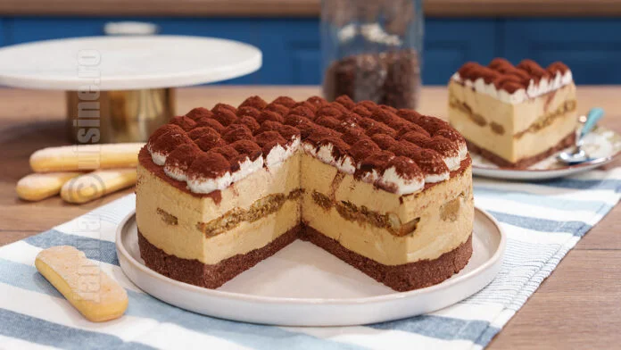

.
Retata saptamanii este:
Ciorba radauteana cu legume
Reteta de supa crema de legume cu smantana este una pe care o fac foarte des pentru familia mea. Ca mai toti copiii, nici ai mei nu se dau in vant dupa legume...
Urmariti-ne pe:

.
Reteta noua

Cheesecake tiramisu fara coacere
Cheesecake tiramisu fara coacere - reteta video Reteta de cheesecake tiramisu am dezvoltat-o intr-o zi in care ma tot gandeam ce sa fac cu crema...